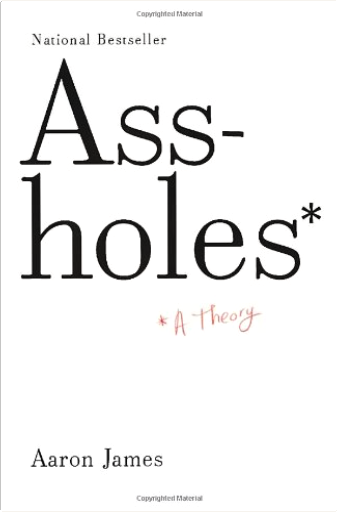
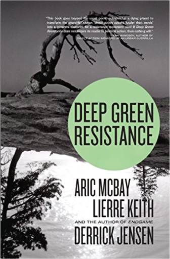
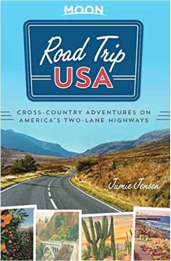
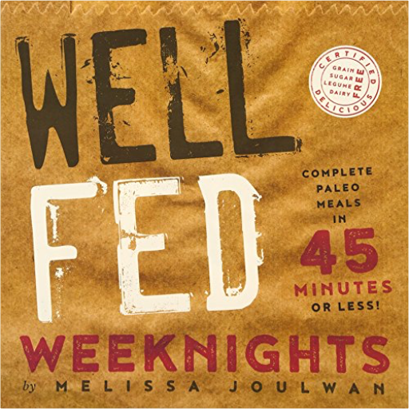
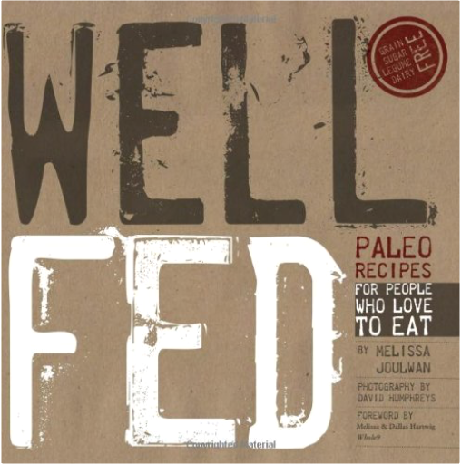
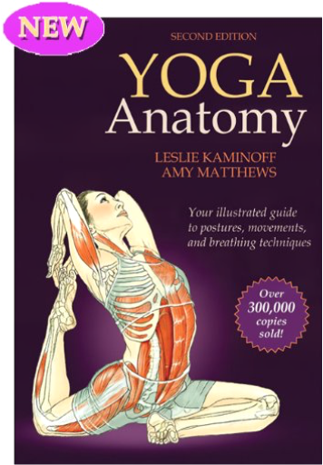

House and Philosophy: Everybody LiesHenry Jacoby, William Irwin An unauthorized look at the philosophical issues raised by one of today's most popular television shows: House House is one of the top three television dramas on the air, pulling in more than 19 million viewers for each episode. This latest book in the popular Blackwell Philosophy and Pop Culture series takes a deeper look at the characters and issues raised in this Emmy Award-winning medical drama, offering entertaining answers to the fascinating ethical questions viewers have about Dr. Gregory House and his medical team. Henry Jacoby (Goldsboro, NC) teaches philosophy at East Carolina University. He has published articles primarily on the philosophy of mind and was a contributor to South Park and Philosophy (978-1-4051-6160-2). Assholes: A TheoryAaron James What does it mean for someone to be an asshole? The answer is not obvious, despite the fact that we are often stuck dealing with people for whom there is no better name. We try to avoid them, but assholes are everywhere—at work, at home, on the road, in the public sphere—and we struggle to comprehend why exactly someone should be acting like that.
Asshole management begins with asshole understanding. Finally giving us the concepts to discern why assholes disturb us so, philosopher Aaron James presents a provocative theory of the asshole to explain why such people exist, especially in an age of raging narcissism and unbridled capitalism. We get a better sense of when the asshole is best resisted and best ignored—a better sense of what is, and what is not, worth fighting for. Deep Green Resistance: Strategy to Save the PlanetDerrick Jensen, Aric McBay, Lierre Keith For years, Derrick Jensen has asked his audiences, "Do you think this culture will undergo a voluntary transformation to a sane and sustainable way of life?" No one ever says yes.
Deep Green Resistance starts where the environmental movement leaves off: industrial civilization is incompatible with life. Technology can't fix it, and shopping—no matter how green—won’t stop it. To save this planet, we need a serious resistance movement that can bring down the industrial economy. Deep Green Resistance evaluates strategic options for resistance, from nonviolence to guerrilla warfare, and the conditions required for those options to be successful. It provides an exploration of organizational structures, recruitment, security, and target selection for both aboveground and underground action. Deep Green Resistance also discusses a culture of resistance and the crucial support role that it can play.
Deep Green Resistance is a plan of action for anyone determined to fight for this planet—and win. Road Trip USA: Cross-Country Adventures on America's Two-Lane HighwaysJamie Jensen The Road Awaits!
Criss-cross the country on America's classic two-lane highways with Road Trip USA!
Inside you'll find:
11 of America's favorite road trips with a flexible network of route combinations, color-coded and extensively cross-referenced to allow for hundreds of possible itinerariesMile-by-mile highlights celebrating the best of Americana, including roadside curiosities, parks, diners, and moreLocal history that reveals the unique personalities of small towns and big cities across the countryVintage snapshots, full-color photos, and beautiful illustrations of America both then and nowOver 125 detailed driving maps covering more than 35,000 miles of classic American blacktopExpert advice from road-warrior Jamie Jensen, who cruised nearly 400,000 miles of highway in search of the perfect stretches of pavementRoad Trip USA celebrates the great American road trip, and gives you the tools, resources, and inspiration to make it your own.
Hit the road! Well Fed Weeknights: Complete Paleo Meals in 45 Minutes or LessMelissa Joulwan Bursting with vibrant flavors and foolproof recipes, the third installment in the best-selling Well Fed cookbook series puts more than 125 complete—and crazy-delicious—paleo meals on your table in 45 minutes or less.
With Well Fed Weeknights, author and mouthy paleo cook Melissa Joulwan brings her love for food and spirit of adventure to a knockout collection of weeknight recipes inspired by takeout classics, food trucks, and cuisines from around the world—all totally free of grains, dairy, legumes, and soy.
Every meal is thoroughly tested and easy to make, with affordable ingredients you'll find at your regular grocery store. (No extra trips to specialty food stores required!)
You won't mind skipping the drive-through or delivery when you can quickly cook meals like...
• Bacon-Jalapeño Burger Balls
• Thai Yummy Salad
• Dirty Rice
• Fried Chicken • Pizza Noodles
• Sticky Orange Sunflower Chicken
• Italian Hoagie Salad
• Street Fries
... and so many more.
All recipes include Melissa's popular ''You Know How You Could Do That?'' variations, as well as Cookup Tips to help condense cooking time with make-ahead items.
You'll want to dog-ear the Mini Cookup page where you'll find step-by-step instructions for cooking six paleo kitchen staples in under an hour. Cook once, and fancy-up your meals all week long with cauliflower rice, zucchini noodles, homemade mayo, and more.
Debuting in Well Fed Weeknights are fun and flexible Food Court Recipes: in-depth blueprints of your favorite dinner themes, like Meat & Potatoes, Burger Night, Velvet Stir-Fry, The Ultimate Salad Bar, and more, all offering basic techniques and creative variations to satisfy your personal cravings.
Well Fed Weeknights is also packed with useful tips and how-to info including:
How to eat in restaurants without abandoning good habits
How to cook quickly and eat slowly
Essential pantry foods for weeknight cooking
The best kitchen tools for fast cooking
Two months of sample menus
A mobile shopping list for every recipe
With fresh ingredients, flavorful spices and herbs, luscious sauces, and simple prep, Well Fed Weeknights is sure to become a lovingly splattered-and-bookmarked, go-to paleo kitchen companion. Well Fed: Paleo Recipes for People Who Love to EatMelissa Joulwan Preparing quality food is among the most caring things we can do for ourselves and the people we love. That's why Well Fed: Paleo Recipes For People Who Love To Eat is packed with recipes for food that you can eat every day, along with easy tips to make sure it takes as little time as possible to get healthy, delicious food into your well-deserving mouth. If you count meals and snacks, we feed ourselves about 28 times each week. All of the Well Fed recipes — made with zero grains, legumes, soy, sugar, dairy, or alcohol — were created so you can enjoy your food every time.
The two essential tricks for happy, healthy eating are being prepared and avoiding boredom. Well Fed explains how to get in the habit of a Weekly Cookup so that you have ready-to-go food for snacks and meals every day. It will also show you how to make Hot Plates, a mix-and-match approach to combining basic ingredients with spices and seasonings to take your taste buds on a world tour. The recipes are as simple as possible, without compromising taste, and they've been tested extensively to minimize work and maximize flavor.
With 115+ original recipes and variations, this book will help you see that paleo eating, too often defined by what you give up, is really about what you'll gain: health, vitality, a light heart, and memorable meals to be shared with the people you love. My Lesbian Experience with LonelinessNagata Kabi HARVEY AWARD WINNER
The heart-rending autobiographical manga that’s taken the internet by storm!
My Lesbian Experience with Loneliness is an honest and heartfelt look at one young woman’s exploration of her sexuality, mental well-being, and growing up in our modern age. Told using expressive artwork that invokes both laughter and tears, this moving and highly entertaining single volume depicts not only the artist’s burgeoning sexuality, but many other personal aspects of her life that will resonate with readers. Yoga Anatomy-2nd EditionLeslie Kaminoff, Amy Matthews The best-selling anatomy guide for yoga is now updated, expanded, and better than ever!
With more asanas, vinyasas, full-color anatomical illustrations, and in-depth information, the second edition of Yoga Anatomy provides you with a deeper understanding of the structures and principles underlying each movement and of yoga itself.
From breathing to inversions to standing poses, see how specific muscles respond to the movements of the joints; how alterations of a pose can enhance or reduce effectiveness; and how the spine, breathing, and body position are all fundamentally linked.
Whether you are just beginning your journey or have been practicing yoga for years, Yoga Anatomy will be an invaluable resource—one that allows you to see each movement in an entirely new light.
With Yoga Anatomy, Second Edition, authors Leslie Kaminoff and Amy Matthews, both internationally recognized experts and teachers in anatomy, breathing, and bodywork, have created the ultimate reference for yoga practitioners, instructors, and enthusiasts alike.  Pretty Face, Vol. 1Yasuhiro Kano Pretty Face, Vol. 1Yasuhiro Kano He wanted to be her boyfriend...
He'll settle for being her twin sister!
When his school bus crashes, teenage karate star Rando is sent into a coma. A year later he wakes up to find that his disfigured face has been reconstructed in the image of his secret crush, Rina! Not knowing what Rando originally looked like, the mad plastic surgeon Dr. Manabe used a photo in Rando's pocket as the model for his reconstructive surgery. Abandoned by his friends and parents, the all-new Rando is mistaken for his would-be girlfriend's long-lost twin sister and adopted into her family. Can he put aside his feelings and be a good "big sister" to Rina...when he's still a teenage boy from the waist down?  Pretty Face, Vol. 2Yasuhiro Kano Pretty Face, Vol. 2Yasuhiro Kano Rando struggles to be a good "big sister" to Rina as fate conspires to put him in one disastrous situation after another. When pants start coming off, and half-naked women start crawling all over him for the thinnest of reasons, Rando must use all his karate wiles to avoid being exposed as a complete weirdo. Meanwhile, will the mad Dr. Manabe succeed in his plan to remove the last remnants of Rando's manhood...or will Rando remove Dr. Manabe's brains with his fist?  Pretty Face, Vol. 3Yasuhiro Kano Pretty Face, Vol. 3Yasuhiro Kano After a bus accident leaves him terribly disfigured by extensive burns, Rando Masashi discovers that his plastic surgeon, in reconstructing his face, used the snapshot of Rina Kurimi, the girl he has a crush on.  Pretty Face, Vol. 4Yasuhiro Kano Pretty Face, Vol. 4Yasuhiro Kano After a bus accident leaves him terribly disfigured by extensive burns, Rando Masashi discovers that his plastic surgeon, in reconstructing his face, used the snapshot of Rina Kurimi, the girl he has a crush on. |

 Made with Delicious Library
Made with Delicious Library